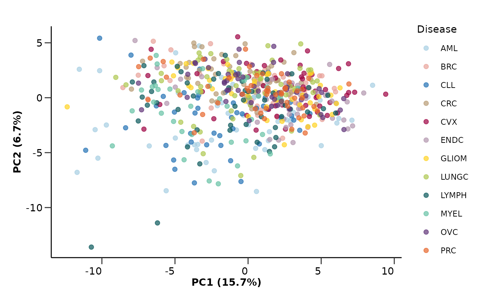
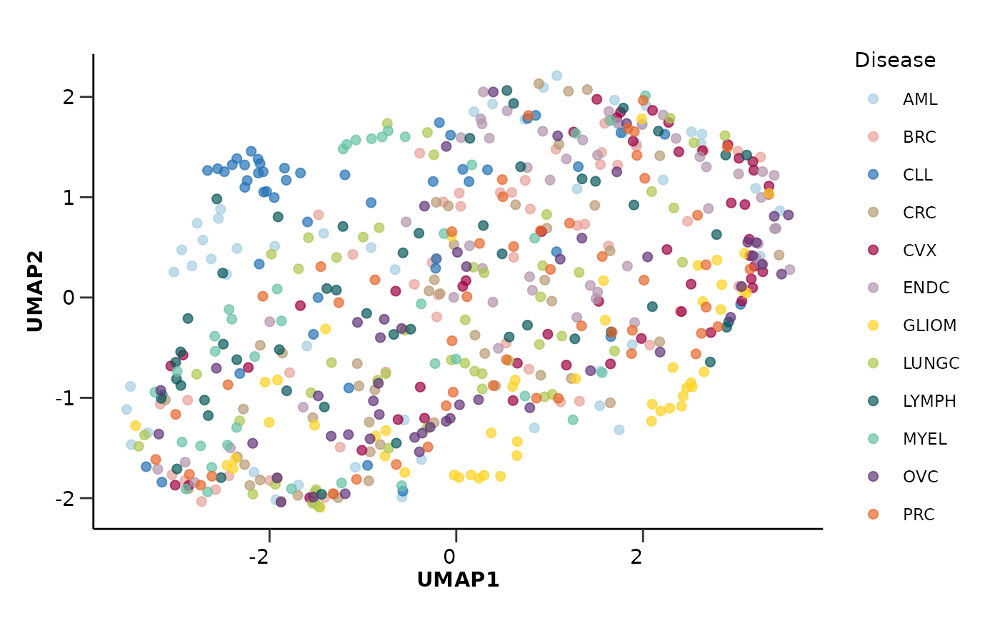

hd_plot_dim() plots the sample data points on a 2D plane.
The points can be plotted in the PCx/PCy or UMAP1/UMAP2 space.
Usage
hd_plot_dim(
dim_object,
metadata,
x,
y,
color = NULL,
palette = NULL,
plot_loadings = NULL,
nloadings = 5,
axis_variance = TRUE
)Arguments
- dim_object
A PCA or UMAP object containing the results of the dimensionality reduction analysis. Created by
hd_pca()orhd_umap().- metadata
An HDAnalyzeR object or a dataset in wide format and sample ID as its first column.
- x
The name of the column in
dim_objectthat contains the x-axis values.- y
The name of the column in
dim_objectthat contains the y-axis values.- color
The name of metadata variable to be used to plot the points color.
- palette
The color palette for the plot. If it is a character, it should be one of the palettes from
hd_palettes().- plot_loadings
The component to be plotted. Default is NULL.
- nloadings
The number of loadings to be plotted. Default is 5.
- axis_variance
If TRUE, the explained variance of the components is added to the axis labels. Default is TRUE.
Examples
# Create the HDAnalyzeR object providing the data and metadata
hd_object <- hd_initialize(example_data, example_metadata)
# Run the PCA analysis and plot results
pca_object <- hd_pca(hd_object, components = 5, by_sample = TRUE, seed = 123) |>
hd_plot_dim(hd_object, x = "PC1", y = "PC2", color = "Disease", palette = "cancers12")
pca_object$pca_plot

# Run the UMAP analysis and plot results
umap_object <- hd_umap(hd_object, components = 2, by_sample = TRUE, seed = 123) |>
hd_plot_dim(hd_object, x = "UMAP1", y = "UMAP2", color = "Disease", palette = "cancers12")
umap_object$umap_plot
